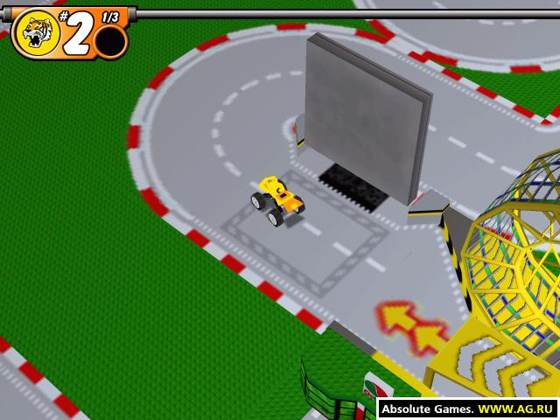
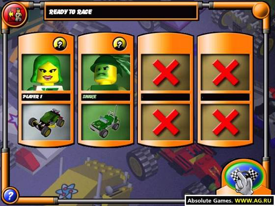

Switch Online
Official option
Some Game Boy Color games have been part of Nintendo Switch Online. Confirm this title is still in the current library. Where to Play does not host this game.
Nintendo Switch Online overview Official site
Image from this RAWG record. Powered by RAWG.
Brick-built ramps are the courses in LEGO Stunt Rally, a 2000 racer whose tracks are assembled from LEGO pieces. Cars made of the same studs jump gaps, and a bad landing scatters the tidy geometry the course was built from.
Studs, slopes, and loop shapes replace asphalt and guardrails. The license is not only the minifigure in the driver's seat; the road itself looks like a table covered in construction toys.
Other brick games of that season explored islands or agents. This one stays on the stunt track, with the pieces doing the work of both the car and the corner.
Same series is the tight name match. Same franchise is the wider family. Same platform is other games on the systems named above.
Facts in this grid are RAWG's, not our review. Open the RAWG record. RAWG.


Screenshots from this RAWG record. Powered by RAWG.
Some Game Boy Color games have been part of Nintendo Switch Online. Confirm this title is still in the current library. Where to Play does not host this game.
Nintendo Switch Online overview Official siteWe don't host this game. Confirm the title is still offered before you rely on a library note.